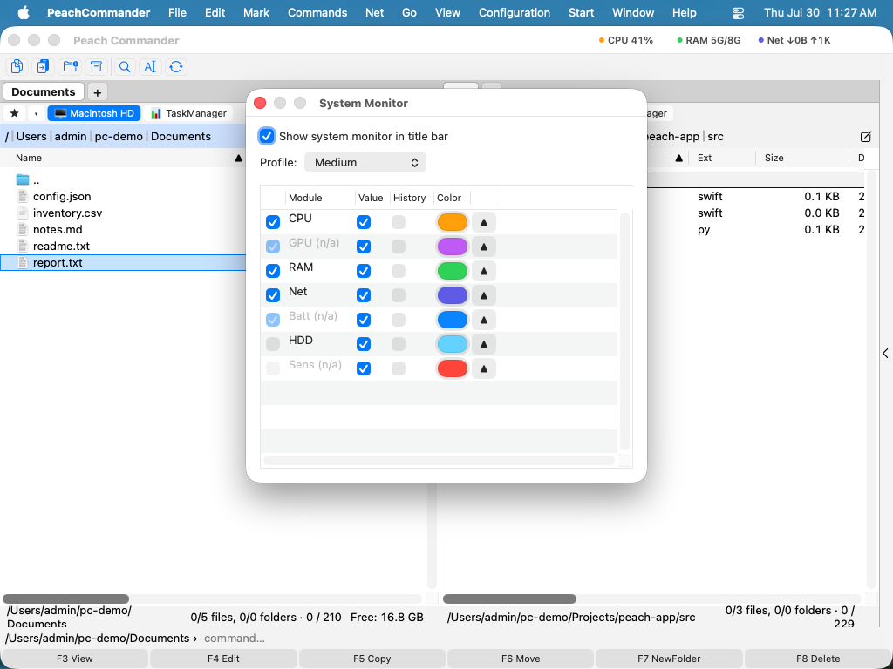

Systemovervågning
System Monitor-pluginet placerer en live aflæsning af din Macs aktivitet direkte i vinduets titellinje: små chips for CPU, hukommelse, disk, netværk og — hvor hardwaren stiller dem til rådighed — GPU, batteri og sensorer. Hver chip opdateres én gang i sekundet; klik på en for et pop op-vindue med en historikgraf og en detaljeret opdeling. Det er et plugin, så du kan aktivere, konfigurere eller fjerne det i Konfiguration ▸ Plugins….
Chippene i titellinjen
Når pluginet er slået til, sidder en række kompakte chips i titellinjen. Hver chip er en farvet prik, en kort etiket og en live værdi (nogle med en indlejret sparkline):
| Chip | Viser |
|---|---|
| CPU | Processorbelastning, med detaljer pr. kerne |
| RAM | Brugt / samlet hukommelse (plus wired, komprimeret, swap) |
| HDD | Plads og læse/skrive-gennemløb på startdiskenheden |
| Net | Download-/upload-hastigheder og -totaler |
| GPU · Batt · Sens | GPU-udnyttelse · batteriladning og -tilstand · blæserhastigheder og temperaturer |
Klik på en chip for at åbne et pop op-vindue med den store aktuelle værdi, en HISTORIK-sparkline, en DETALJER-liste med nøgle/værdi og — for CPU'en — en KERNEBELASTNING-liste med bjælker pr. kerne.
Konfigurér det
Vælg Kommandoer ▸ System Monitor… (eller åbn Konfiguration ▸ Indstillinger ▸ System Monitor) for at konfigurere aflæsningen:
- Vis systemovervågning i titellinjen — hovedafbryderen til/fra for chippene.
- Profil — forudindstillingerne Minimal, Medium eller Maksimal, som vælger et fornuftigt sæt moduler.
- Modultabellen — slå hvert modul (CPU, GPU, RAM, HDD, Net, Batt, Sens) til eller fra, vælg dets farve, og træk rækker for at fastlægge den rækkefølge, de vises i i titellinjen. Moduler, din hardware ikke kan rapportere, vises som (n/a).

(Figur: vælg hvilke moduler der vises, deres farver og deres rækkefølge.)Bemærkninger
- Alt måles, aldrig forfalskes: moduler, hvis data hardwaren ikke stiller til rådighed (ofte GPU eller sensorer på nogle Mac-computere), forbliver utilgængelige i stedet for at vise opdigtede tal. Batteri er utilgængeligt på stationære computere.
- Måling kører på en baggrundstimer kun mens aflæsningen er synlig, og bevarer omkring 30 minutters historik til graferne.
- Dine modulvalg, farver og rækkefølge gemmes med appens konfiguration.